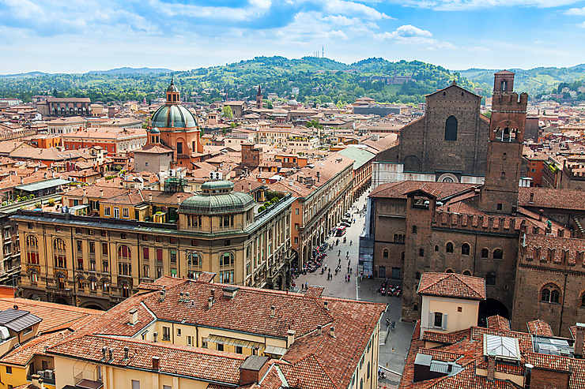
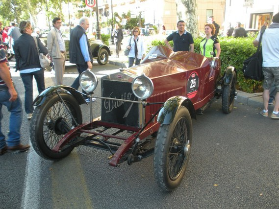
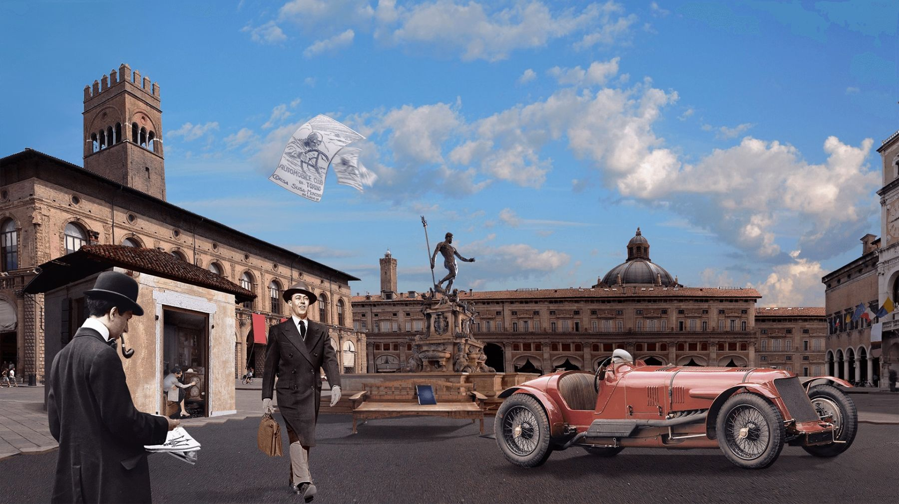

Maserati was created in 1914 in Bologna by Alfieri Maserati. Coming from a sibling of 7 brothers, 5 will be involved in the creation of the brand. All passionate about mechanics and the automobile. The sixth brother,Mario Maserati , he wasn’t interested in cars, what he liked was art. He also studied at "Beaux Arts". That's why his brothers entrusted him with the task of producing the Maserati logo.
Carlo, the eldest, was the first to start. He made bikes, then motorcycles. He later became a test driver for Fiat and Isotta Fraschini, but died in a race in 1910. In 1917, Alfieri began manufacturing spark plugs.
Alfieri and Ettore were hired in 1922 by the firm Diatto to produce a first racing car: the Tipo 20. Unhappy in the Grand Prix, the Diatto was nevertheless a fast and reliable car. She will show it by removing her first big success, in endurance racing, at the 24 Hours of Monza, in 1924. The second car, a 2-liter eight-cylinder engine, designed by Alfieri, was less brilliant, and its failure led Diatto to withdraw from the race.
In 1926, the two brothers decided to build their own racing cars. It was on this date that the automobile brand Maserati was really launched. The first Maserati car was developed on the basis of the Diatto and took the name of Typo 26 in 1926. It was the first "real" Maserati. It quickly becomes the formidable rival of the Bugatti. In 1926, it won the Targa Florio. Alfieri died in 1932. With his death, the firm lost its engineer and especially its manager. The three Bindo brothers, Ernesto and Ettore, continue the business. Bindo takes the general management, Ernesto the technical management and Ettore has the financial responsibility. It will prove to be the weak link in the organization which, despite sporting and commercial successes, will be sold to Adolfo Orsi.
When the creation of the logo was entrusted to Mario Maserati by his brothers, he looked out of his window overlooking the main square in Bologna, the birthplace of the Maserati brothers and the city where the first Maserati factory appeared, to maybe find inspiration there. On this large square, there is a large fountain with a statue of Neptune, which is the representation of Poseidon in Roman mythology.  He therefore decided to use the Neptune trident as the basis for the logo. Without knowing it, he made this mythological attribute, an attribute that is today inseparable from the Maserati brand.